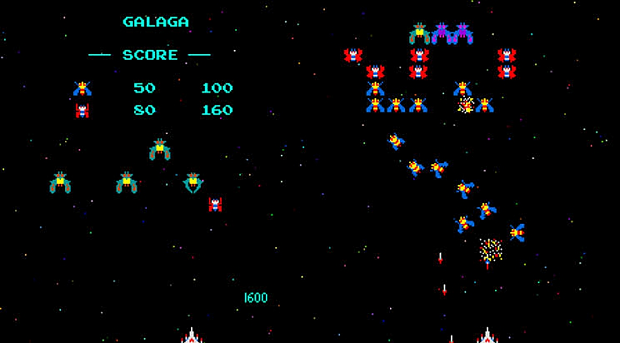
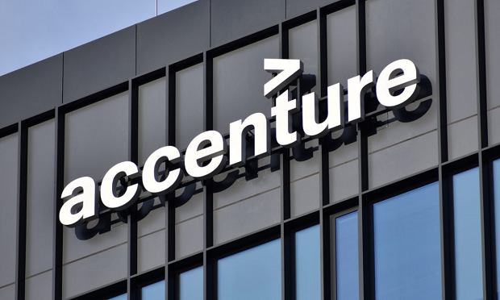

2011 em diante
Minha infância e os jogos

Tudo se deu início na minha infância. Eu sempre fui uma criança completamente apaixonada por jogos, jogava o tempo todo com a minha família e amigos. Comecei jogando alguns jogos multiplayer no PC e depois passei para o Super Nintendo SNES (meus jogos favoritos eram Bishoujo Senshi Sailor Moon, Bomberman e Street Fighter II). Também joguei um pouquinho no PS2, amava Naruto: Ultimate Ninja.
Logo mais eu conheci o Wii e o Xbox 360. Com o Wii eu descobri a minha enorme paixão por Mario. Eu já joguei todo tipo de Mario que você possa imaginar (Bros, Kart, Galaxy, Maker, All-Stars, World e muitos outros). Daí em diante os jogos foram se tornando cada vez mais e mais presentes na minha vida. Além de divertido, eles me permitiam criar uma conexão incrível com as pessoas ao meu redor. Eu segui me aventurando por muitos outros consoles e jogos e hoje em dia continuo amando esse mundo maravilhoso dos games.
7 de Maio de 2022
CoderDojo Python

Um tempo depois eu tive a oportunidade de fazer parte de um CoderDojo de Python e foi muuuito interessante! Eu fiz parte de um time onde só tinha meninas e a instrutora nos contou várias histórias sobre como foi para ela fazer a graduação em um curso onde só tinha homens. Isso foi muito legal porque todas nós nos sentimos confortáveis para compartilhar situações parecidas e pudemos nos incentivar a seguir firme com aquilo que queríamos fazer, indepedente das situações que teríarmos que enfrentar pela frente.
Por eu ter dado uma boa olhada em JavaScript antes, trabalhar com Python foi muito mais simples do que imaginei, já que acabei encontrando muitas semelhanças entre as duas linguagens. Nós fizemos vários exercícios com variáveis, estruturas condicionais e estruturas de repetição, além de termos uma visão ampla sobre o tanto de coisa legal que era possível fazer com Python. Minha cabeça abriu ali, o mundo da programação era muito maior do que eu imaginava e eu passei a ficar cada vez mais interessada por tudo isso.